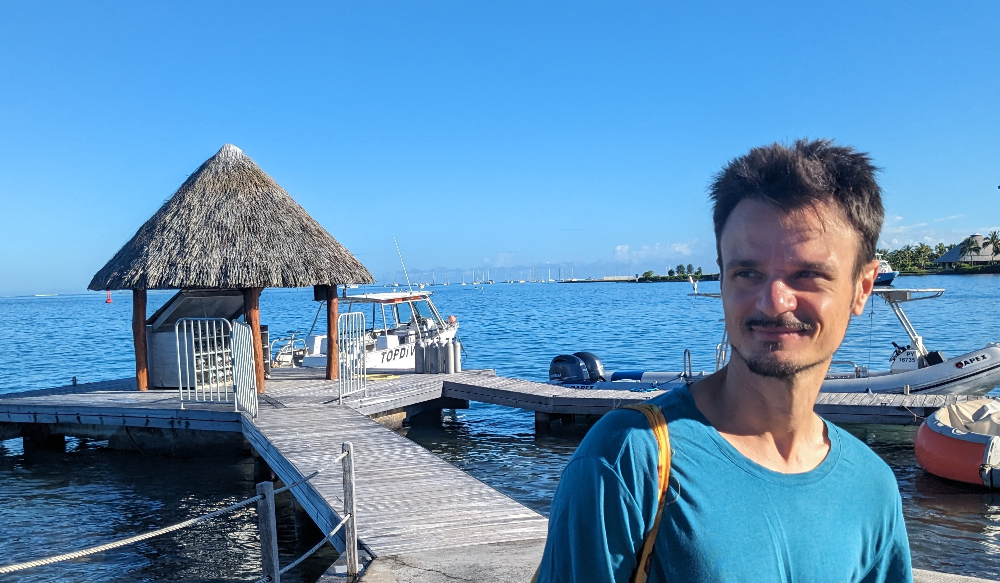

Tahiti - French Polynesia - 2024.
- Travel plans:
- July 15-19 2024, ANTS XVI at MIT.
- June 17-21 2024, CAVARET in Barcelona.
- I will be back in Europe from May 2024.
- News:
- May 2024 : Cohen-Macaulay type of orders, generators and ideal classes has been accepted for publication in Journal of Algebra.
- April 2024 : Abelian varieties over finite fields and their groups of rational points , with Caleb Springer, has been accepted for publication in Algebra & Number Theory.
- Feb 2024 : Ideal classes of orders in quaternion algebras , with Harry Smit and an Appendix by John Voight, has been accepted for publication by the Journal of Pure and Applied Algebra.
- Feb 2024 : I was awarded a Marie Skłodowska-Curie Postdoctoral Fellowship.
- Jan 2024 : started at the Gaati Lab at UPF.
- Nov 2023, new preprint: Local isomorphism classes of fractional ideals of orders in étale algebras .
- Short CV:
- January 2024 - current: Postdoc at Gaati Lab at the University of French Polynesia
- January 2021 - December 2023: VENI Postdoc at Utrecht University.
- January 2019 - December 2020: Postdoc at Utrecht University, under the mentorship of Carel Faber.
-
September - December 2018: Postdoc at the Max Plank Institute for Mathematics in Bonn.
- August 2018: Postdoc at Stockholms Universitet.
- August 2013 - July 2018: Ph.D. student at Stockholms Universitet, under the supervision of Jonas Bergström. I have obtained my doctorate on June 28, 2018.
- Full CV :
- June 2024
- Contacts:
- E-mails: stefano.marseglia89 (at) gmail.com
- Postal Address: Université de la Polynésie française, BP 6570, 98702 Faaa, French Polynesia
- Mathematical Interests: Arithmetic Geometry and Number Theory, with focus on computational aspects.
- Abelian varieties (especially over finite fields)
- Orders in algebras (ideal class monoid, classification of modules)
- Arithmetic of GLn(Z) and the conjugacy problem
- Preferred Pronouns:
- he/him
- Links :
-
 orcid.org/0000-0003-1648-4938
orcid.org/0000-0003-1648-4938
-
![github]() github.com/stmar89
github.com/stmar89
-
 Find me on arXiv
Find me on arXiv
- AG seminar at Utrecht University old page - new page.
More precisely, my main interests are: